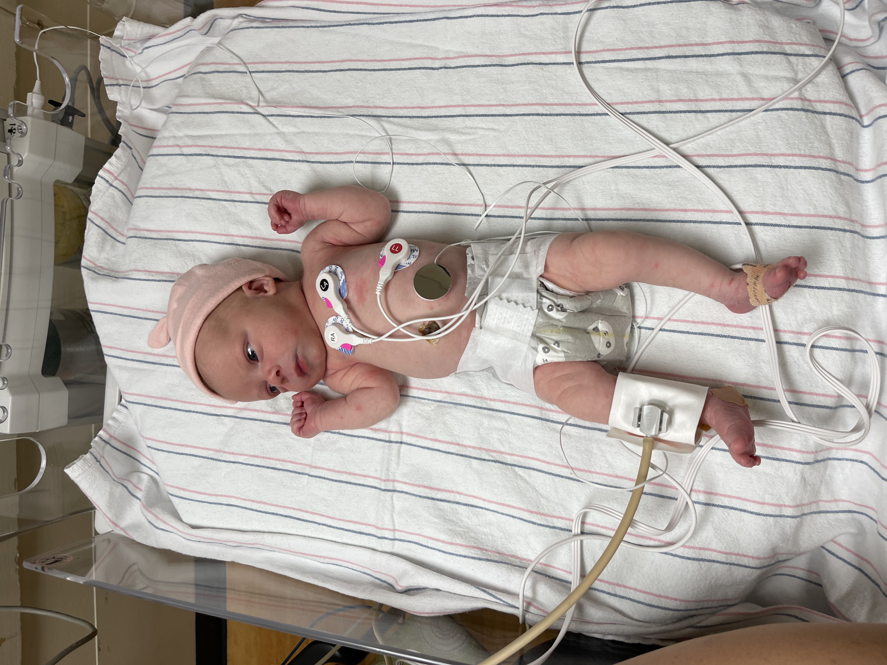
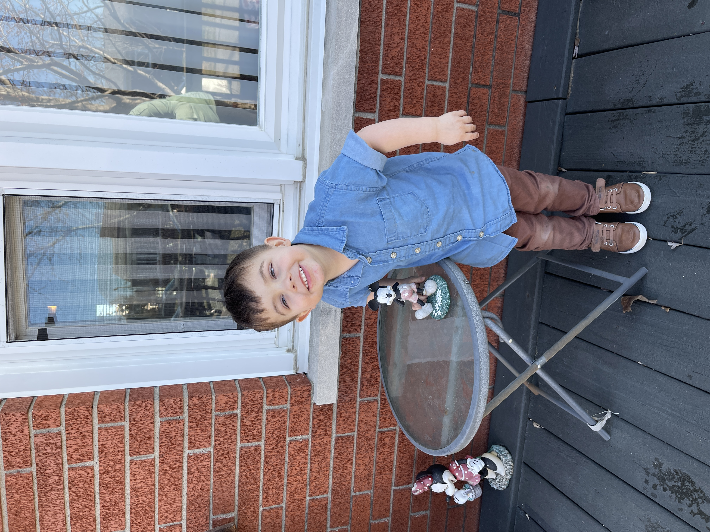
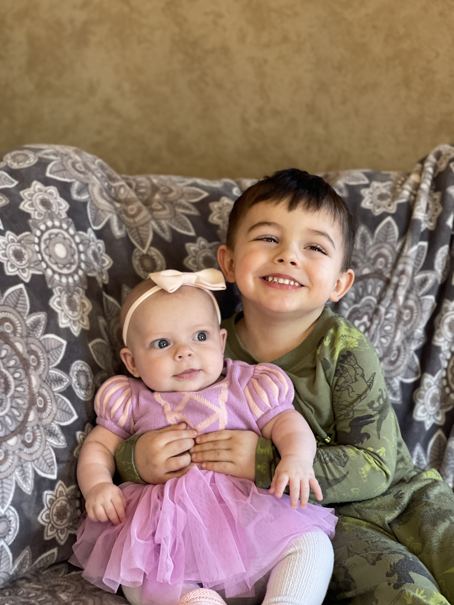

Hi, I'm Matt and I'm Happy
I am really excited to say this, but I'm happy. It's been a stressful few months for me.
It's crazy to say this, but at the time of writing, my family is relatively healthy. And that is something that hasn't been easy to say for a while. My daughter, Hazel, was born October 19, 2023 and for her four months of life she has been sick for about two months total of her life. CRAZY!

Hazel is Relatively Healthy
A few days after Hazel was born, and we had gone home from the hospital, we were asked to go to the Emergency Room to check on Hazel's health. That was a terrifying endeavor. We were there for over six hours and left with good notes!
We dealt with her, and Everett both dealing with RSV. That was another absolutely TERRIFYING experience for our family. Multiple ER visits. I have a picture of Everett after taking a breathing treatment, but he wouldn't want me to show you that.
Luckily, in late February, we are on the tail end of another sickness in Hazel. She is looking good.
My Son is Incredible
Oh wow, how lucky am I to be the father of a son like Everett. He is so smart and funny. He is going to be four years old in April and I can't wait to see what God has planned for him. He's about to get glasses and he's about to start t-ball!
He is learning so much and is so friendly. We are working on potty-training.. oh that is hard!
Everett and Hazel as Siblings
Everett and Hazel absolutely LOVE each other! Today, we got to hear Hazel actually laugh at her brother. It was beautiful. He was jumping on the bed and Hazel was watching him and just laughed and laughed. It was so good to hear.
My Beautiful Wife
How could I not talk about my wife, Sandy! Oh wow, do I love her. She is more beautiful than ever. This year, we will celebrate our 6 year wedding anniversary and that makes 8 years together. Wow.
My wife is incredible. This year, she has taken to reading which makes me happy. She also has taken over our Children's Ministry at church, which she did a year ago, but she is still rocking on that. She also has started a Mother's Ministry group on Facebook. She does daily verses and talks about the meanings and context with a group of Mothers and she is really excited about that, so I'm excited about that too!
I'm very impressed with her. She is a stay at home mom, and has been for.. wow, over two years. She is such a powerful mother and caretaker. She does so much for others and I couldn't be more lucky to spend the rest of my life with my wife.
I love you so much, Sandy Gail.

My Preaching
Yes, I have been preaching a little bit in the last few years. I look forward to preach more! I love it. I really do. My life as a Christian is something I am very happy to talk about. It is stressful, but it is so fulfilling. I will be preaching a few more times this year, and I look forward to that!
Here is a recent sermon of mine!
My Reading
Ah, my reading slowed down a lot this month. I have read 6 books this year. My goal is 40 this year... I know, that's a lot. And I haven't been having much fun reading lately. It's just the books that I've chosen to read, I think. Now, I have an update on my youtube channel that I talk about channel updates, but really the thing I want to talk about is The Lord of the Rings.
The Lord of the Rings is something that I'm so very excited about reading. I have read 5 books, and I had 3 more while I was preparing to read LOTR. But that has changed, as of today. I'm diving very deep into reading LOTR. Starting with The Hobbit, and that'll be a re-read! Then I'll jump into The Lord of the Rings, and then I'll be reading The Silmarillion! Oh, I cannot wait for that!
My Schooling
Lastly, I will be graduating from college in a few months. Well, that was something I had dreamed of, and it's finally coming true. I should be graduating in June this year. Wow!!
So, Yes, I am Happy
I am, I really am.